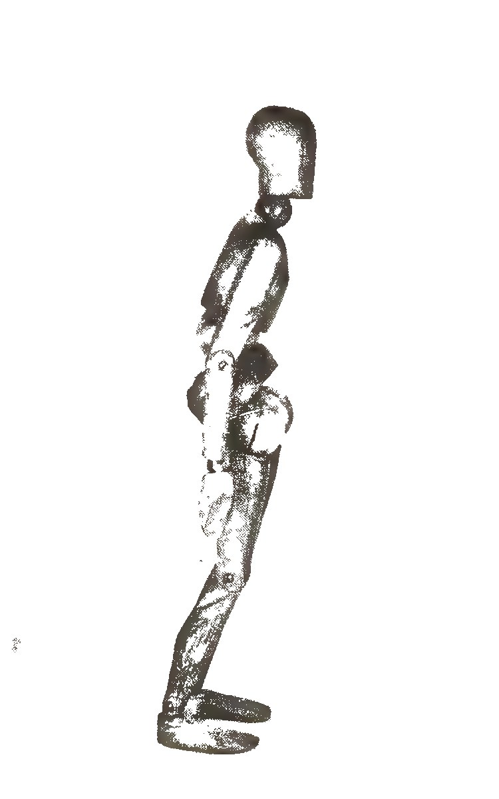
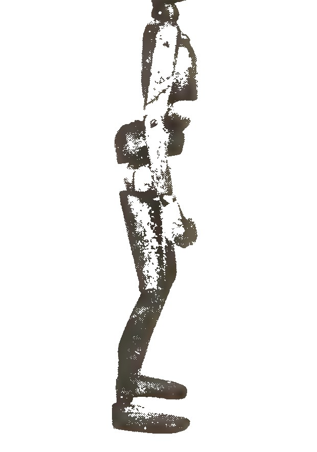
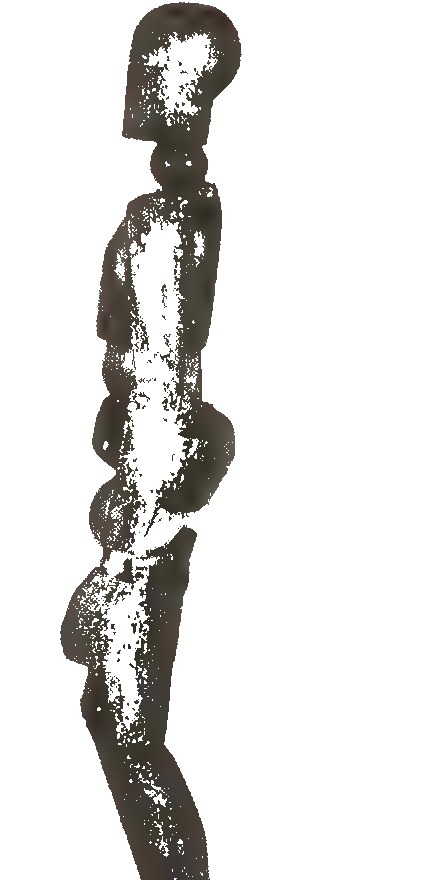

Chương 10 — Tổng Áp Lực Thần Kinh–Cơ: Tư Thế Già Nua Và 'Cái Kẹp Tối'
Cuộc xem xét của chúng ta về các khuôn mẫu phản xạ cơ bắp do stress gây ra đã đem lại một hiểu biết căn bản: Có hai phản xạ chính được kích hoạt bởi stress. Cùng nhau, chúng chiếm một phần lớn các rối loạn sinh lý điển hình xảy ra khi con người già đi.
Phản xạ Đèn Đỏ và phản xạ Đèn Xanh (xem Hình 17 và 18), với tư cách là những phản xạ thích nghi cơ bản, được khắc sâu vào hệ thần kinh trung ương của chúng ta. Việc đánh giá đúng vai trò của hai khuôn mẫu phản xạ chính này mang lại sự hiểu biết đầy đủ hơn về phản ứng stress mà Hans Selye ban đầu đã phát triển. Khi làm được điều đó, nó cho phép chúng ta hiểu tại sao chất lượng của những gì xảy ra với ta trong những năm tháng của cuộc đời lại quan trọng hơn vô hạn đối với sức khỏe và hạnh phúc của ta so với số lượng số năm ta đã sống.
Hai phản xạ thích nghi này cần thiết cho sự sống sót của chúng ta với tư cách là một loài và với tư cách là những cá nhân. Chúng lần lượt phục vụ việc bảo vệ chúng ta khỏi nguy hiểm trong thế giới, và đưa chúng ta tiến đến những cơ hội của thế giới. Chúng cần thiết cho cuộc sống của chúng ta như không khí ta hít và thức ăn ta ăn.
Những vấn đề điển hình xảy ra trong quá trình lão hóa của con người là do tác dụng kết hợp của phản ứng rút lui và phản ứng hành động. Khi so sánh hai phản ứng cơ bắp này (xem Hình 17 và 18), bạn sẽ thấy chúng đối kháng nhau, kéo theo những hướng ngược nhau để phục vụ những chức năng đối lập là bảo vệ và vận động. Chúng là những phản ứng somatic toàn thể; nghĩa là, không chỉ chúng liên quan đến toàn bộ hệ cơ bắp từ đầu đến chân, mà còn lôi kéo toàn bộ hệ thần kinh trung ương vào một định hướng cụ thể hoặc là rút lui tiêu cực hoặc là hành động tích cực. Nếu nhìn một cách khách quan, chúng ta chỉ thấy sự vận động của cơ bắp; nhưng chủ quan hơn, còn nhiều điều đang xảy ra: Một cảm giác đặc thù và một loạt cảm giác đi kèm với sự vận động cơ bắp này.
Khi một trong hai phản xạ đối kháng này xảy ra, nó ảnh hưởng đến toàn bộ hệ cơ bắp của cơ thể. Hầu như cơ nào cũng có một cơ đối lập cân bằng lại
nó. Mỗi cơ chủ động đều có một cơ đối kháng, nên chẳng hạn, khi chúng ta co cơ nhị đầu để gập tay, cơ tam đầu duỗi, tức là cơ đối kháng của nó, sẽ tự động thư giãn. Như vậy, trong phản xạ Đèn Đỏ, nửa trước hệ cơ bắp của cơ thể co lại, trong khi nửa sau, tức cơ đối kháng của nó, thư giãn và kéo dài ra. Điều này có nghĩa là tất cả các cơ trong toàn bộ cơ thể—mọi cơ chủ động và đối kháng—đều đồng thời tham gia.

Hình 17: Phản xạ Đèn Đỏ
Từ đầu đến chân, phản xạ Đèn Đỏ bao gồm các cử động sau: nhắm mắt, căng hàm và mặt, kéo cổ về phía trước, nhấc vai lên, gập khuỷu tay, nắm chặt nắm tay, làm phẳng ngực, căng cơ bụng, co cơ hoành và nín thở, co đáy chậu (kể cả các cơ thắt hậu môn và niệu đạo), co các cơ mông nhỏ để xoay đùi vào trong (chân hướng vào nhau), khép đùi, co các cơ gân sau đùi để gập gối, gập và lật bàn chân vào trong (mỗi bàn chân nhấc lên và hướng vào trong, nâng vòm chân lên). Phản hồi cảm giác của tất cả các cử động này tạo nên cảm giác chủ quan của phản xạ Đèn Đỏ: sợ hãi.

Hình 18: Phản xạ Đèn Xanh
Từ đầu đến chân, phản xạ Đèn Xanh bao gồm các cử động sau: mở mắt, hàm và mặt, kéo cổ về phía sau, kéo vai xuống dưới, duỗi khuỷu tay, mở bàn tay, nâng ngực lên, kéo dài cơ bụng, thư giãn cơ hoành và giải phóng hơi thở, thư giãn các cơ thắt hậu môn và niệu đạo ở đáy chậu, co các cơ mông lớn để duỗi đùi, co các cơ mông trung để xoay đùi ra ngoài (chân dáng vịt), dạng đùi, co các cơ duỗi đùi để làm thẳng gối đến mức duỗi quá mức, duỗi và xoay bàn chân ra ngoài. Phản hồi cảm giác của tất cả các cử động này tạo nên cảm giác chủ quan của phản xạ Đèn Xanh: nỗ lực.
Nhưng sự cân bằng lý tưởng kiểu bập bênh giữa co cơ chủ động và thư giãn cơ đối kháng lại không phải là điều thường phát triển khi chúng ta già đi. Khi con người trẻ trưởng thành, nhiều tình huống đe dọa và mời gọi khác nhau sẽ kích hoạt phản xạ Đèn Đỏ và phản xạ Đèn Xanh nhiều lần. Khi những lần lặp lại này tích lũy dần, mỗi khuôn mẫu phản xạ dần trở thành thói quen. Lúc đầu chỉ ở mức độ nhỏ, nhưng nếu tần suất và cường độ tăng lên, các sự co cơ trở nên ăn sâu. Dần dần, phản xạ Đèn Đỏ và phản xạ Đèn Xanh can thiệp vào nhau. Khi một bên co một phần, bên kia không thể co hoàn toàn.
Đó là tổng áp lực thần kinh–cơ, một trạng thái bất động của cơ bắp do sự tích tụ dần dần của các sự co cơ đối kháng mạn tính.
Tư thế già nua trong Hình 19c là sự cộng tổng của hai phản xạ đối kháng (Hình 19a và 19b). Đó là một tư thế rất quen thuộc, thấy được ở hàng triệu cơ thể già nua, và nó cho thấy rõ hai phản xạ tương hỗ đã thành thói quen như thế nào thành một sự thỏa hiệp căng thẳng giữa hai khuôn mẫu. Sự co mạnh mẽ của các cơ cột sống trong phản xạ Đèn Xanh tiếp tục kéo lưng dưới và cổ thành một đường cong. Nhưng sức kéo cũng mạnh không kém của các sự co cơ bụng và vai trong phản xạ Đèn Đỏ lại nghiêng toàn bộ thân mình về phía trước, làm tròn lưng và vai và đẩy đầu ra phía trước.

Hình 19a: Phản xạ Đèn Đỏ

Hình 19b: Phản xạ Đèn Xanh

Hình 19c: Tư thế già nua
Cả ba tư thế đều được trình bày ở dạng cực đoan để chúng ta nhận ra chúng rõ ràng. Tuy nhiên, trên thực tế, vì cơ thể con người rất đa dạng, nên các tư thế này xuất hiện trong vô số kết hợp. Đôi khi phản xạ Đèn Đỏ chiếm ưu thế hơn nhiều, tạo ra một tư thế già nua khom lưng hơn hẳn. Hoặc phản xạ Đèn Xanh có thể chiếm ưu thế, làm phóng đại các đường cong của lưng dưới, lồng ngực và cổ. Dù kết hợp thế nào, sự cạnh tranh giữa hai phản xạ dần làm biến dạng cơ thể theo hướng của tư thế già nua. Dù điều này xảy ra trong quá trình lão hóa điển hình của con người, chính tổng của các phản ứng đã thành thói quen trước áp lực thần kinh–cơ là nguyên nhân của các bệnh lý được thảo luận trong những đoạn sau.

Hình 20a: Tư thế già nua với sự chiếm ưu thế của phản xạ Đèn Đỏ

Hình 20b: Tư thế già nua với sự chiếm ưu thế của phản xạ Đèn Xanh
1. Cử động cứng và hạn chế.
Khi phản xạ Đèn Đỏ và phản xạ Đèn Xanh khép lại gần nhau, bộ xương con người bị giam cầm trong chính hệ cơ bắp của nó. Như đã lưu ý trước đó, chính các cơ quanh trung tâm trọng lực của cơ thể là những tác nhân trung tâm của cả hai phản xạ. Khi chúng đồng thời kéo xương chậu và hông lên về phía thân mình, nhưng lại kéo thân mình và đai vai xuống về phía xương chậu, mọi cử động đều trở nên hạn chế. Sự vận động xoay tự do giữa xương chậu và thân mình bị hạn chế. Điều này tự động
hạn chế việc đi lại. Xương chậu không đung đưa nữa, và hai tay mất đi sự đung đưa đáp trả lại sự xoay của xương chậu. Thay vì tay phải đưa về phía trước cùng với chân trái (Hình 21a), nó bắt đầu đưa về phía trước cùng với chân phải. Thân mình đã trở nên cứng đơ, như một khối duy nhất (Hình 21b).

Hình 21a: Đi lại với sự đung đưa đáp trả

Hình 21b: Đi lại với thân mình cứng đơ
Cả hai cánh tay phía trên thân mình và hai chân phía dưới xương chậu cũng bị hạn chế tương tự, và cái đầu cũng vậy. Khi tư thế già nua phát triển, trở nên không thể quay đầu trọn vòng, chẳng hạn để nhìn phía sau khi bạn cố đỗ xe. Đai vai bị kéo xuống dưới, khiến hai tay không thể với tới và xoay được. Phụ nữ gặp khó khăn khi mặc áo ngực, và người chơi gôn gặp khó khăn khi vung gậy trọn vẹn. Trở nên khó khăn khi xoay gối vào trong và ra ngoài một cách tự do. Nhảy múa trở thành một nỗ lực quá sức. Rất khó giữ thăng bằng, và nỗi sợ ngã phát sinh, lần lượt khiến người ta trở nên thận trọng và cứng nhắc hơn trong cử động.
2. Đau mạn tính.
Sự co cứng mạn tính của hệ cơ bắp cơ thể gây ra cơn đau âm ỉ mạn tính ở chính những cơ đó. Chúng trở nên đau nhức, đôi khi thực sự đau. Vì phản ứng Landau sớm liên tục được kích hoạt trong phản xạ Đèn Xanh, nên sự khó chịu ở các cơ vùng lưng dưới và xương chậu sẽ dao động từ cơn đau âm ỉ đến cơn đau nhức rõ rệt, tùy theo
mức độ hoạt động gây stress. Hơn nữa, sự hạn chế của các khớp vai và hông sẽ gây ra các mức độ khó chịu khác nhau, tùy theo loại hoạt động thường ngày đã tham gia. Chẳng hạn, nhân viên đánh máy sẽ bị đau nhức vai và cổ; nhân viên bưu điện sẽ bị đau nhức mông và hông. Khi tư thế già nua đã tiến triển xa, và phần thân trung tâm trở nên khá cứng đơ, cơn đau sẽ bắt đầu ở các chi. Chính cơn đau này—chẳng hạn ở khuỷu tay và bàn tay, hoặc ở gối và bàn chân—mà các bác sĩ thường nhầm là viêm khớp, dây thần kinh bị chèn ép, hội chứng ống cổ tay, v.v.
3. Mệt mỏi mạn tính.
Bởi vì các sự co chồng chéo của hai phản xạ đồng thời kích hoạt toàn bộ hệ thống cơ của cơ thể, nên kết quả là một sự tiêu hao năng lượng khổng lồ. Một trong những than phiền phổ biến nhất của người cao tuổi là họ luôn mệt. “Xin hãy làm gì đó để cho tôi thêm năng lượng!” là một lời kêu cứu mà tôi đã nghe hàng trăm lần. Nhưng những người này không thiếu năng lượng. Đó không phải là vấn đề của họ. Vấn đề của họ là, một cách không tự nguyện và vô ý thức, họ đang tiêu hao một lượng lớn năng lượng liên tục. Những sự co mạn tính này tiếp diễn không suy giảm khi họ nằm xuống, ngay cả trong lúc ngủ. Khi họ thức dậy vào buổi sáng, họ ngạc nhiên nhận ra rằng không chỉ cơ họ đau nhức mà họ còn mệt nữa. Một số trở nên mệt mỏi đến mức cần phải nghỉ ngơi trong vòng một hoặc hai giờ sau khi thức dậy.
Đôi khi cảm giác chủ quan không phải là mệt mỏi mà là yếu đuối. Tôi thường đọc các báo cáo y khoa nói rằng cơ của một bệnh nhân cao tuổi đã trở nên “yếu.” Điều này thường là không đúng. Nếu các bác sĩ chịu khó sờ nắn các cơ bị ảnh hưởng, họ sẽ phát hiện rằng chúng đang bị giữ cứng trong một sự co trương lực không tự nguyện. Thực tế, chúng không yếu mà khỏe, do sự co liên tục. Thường thì chúng trở nên khá to và mạnh mẽ vì sự kéo mạn tính đó.
4. Thở nông mạn tính.
Tư thế già nua, bằng cách kết hợp các sự co của phản ứng rút lui và phản ứng hành động, kéo xuống toàn bộ lồng ngực, cả trước và sau, làm bất động ngực. Chúng ta đã thấy điều này gây ra hơi thở nông và nhanh của thở quá mức cùng những tác động đáng tiếc của nó đối với chức năng tim mạch. Khi lượng oxy hít vào trở nên cực thấp, kết quả thường là trầm cảm, uể oải và mất sự sắc bén của trí óc.
5. Hình ảnh bản thân tiêu cực.
Khi các cá nhân đến một giai đoạn của cuộc đời mà ở đó (1) họ không còn làm được những gì họ từng làm, (2) họ luôn đau, (3) họ mệt và không có năng lượng, và (4) nguồn oxy của họ bị hạn chế, những cá nhân này thường phát triển một hình ảnh bản thân tiêu cực. Điều này có thể xảy ra nếu, bất chấp mọi nỗ lực, họ không thể đảo ngược sự mất mát các chức năng thời trẻ của mình, và nếu họ liên tục được nói rằng, “Đó là hệ quả tất yếu của lão hóa.” Tình trạng này có những hậu quả tai hại riêng của nó, bởi vì, theo quy luật somatic, những gì bạn kỳ vọng thường là những gì bạn nhận được. Điều này sẽ được thảo luận trong Chương 12.
6. Huyết áp cao mạn tính và “Cái Kẹp Tối”.
Có lẽ nguyên nhân chính của tử vong do các bệnh ở giai đoạn cuối đời là xơ vữa động mạch, còn gọi là “sự cứng lại của các động mạch.” Tình trạng này là gốc rễ của cả bệnh mạch vành và bệnh tim mạch, trong đó bệnh sau bao gồm đột quỵ và vỡ phình động mạch. Quan điểm khoa học của các nhà nghiên cứu lão học là huyết áp cao, kết hợp với sự cứng lại của động mạch làm hạn chế dòng máu, chính là nguyên nhân gây ra những sự việc này, và rằng tình trạng này là kết quả của một quá trình sinh học được lập trình di truyền. Nói cách khác, quan điểm y khoa là xơ vữa động mạch tăng huyết áp là “hệ quả tất yếu của lão hóa.”
Nhưng rất có thể không phải như vậy, và tôi nói điều này vì hai lý do, trong đó một lý do tôi đã đề cập trong thảo luận về phản xạ Đèn Đỏ: Khi phản xạ Đèn Đỏ hạn chế hơi thở và do đó kích hoạt thở quá mức, nó cũng áp chế nhịp tim và huyết áp thay đổi bình thường của loạn nhịp xoang. Điều này có nghĩa là hai điều xảy ra: (1) Sự chiếm ưu thế của hệ thần kinh giao cảm đối với chức năng tim mạch khiến thành cơ trơn của các ống mạch co lại; và (2) sự thay đổi lên xuống của huyết áp không còn xảy ra nữa, nên thành mạch không được giữ mềm dẻo và vì thế không thích ứng được với những thay đổi của huyết áp.
Lý do kia để sửa đổi quan điểm hiện hành về tính tất yếu của xơ vữa động mạch tăng huyết áp liên quan đến những tác động đã biết của sự co cơ tĩnh—còn gọi là co cơ đẳng trương. Có hai cách mà các cơ có thể hoạt động: tĩnh hoặc động. Khi bạn vắt nước từ một quả cam, các ngón tay khép lại quanh quả cam; cử động của các ngón tay này là một sự co động. Khi bạn bóp một quả bóng chày, các ngón tay không cử động, dù các cơ đang co; đó là sự co tĩnh. Sự co tĩnh của cơ là điều xảy ra trong bài tập đẳng trương, từng được phổ biến qua chương trình phát triển cơ bắp của Charles Atlas. Đó là sự co của một nhóm cơ chống lại một nhóm khác, như khi bạn ép lòng bàn tay hai bên lại với nhau khiến cơ ngực co lại—hai bàn tay không cử động, nhưng các cơ thì có.
Nhưng có một vấn đề với hình thức tập luyện này: nó gây ra sự tăng vọt mạnh về huyết áp.
Đối với trái tim bình thường, bài tập đẳng trương đặt ra một áp lực đặc thù. Khác với bài tập động, trong đó cung lượng tim tăng mạnh mà thường không thay đổi huyết áp trung bình, trong bài tập đẳng trương cung lượng tim chỉ tăng nhẹ nhưng huyết áp trung bình lại tăng mạnh. Điều này dẫn đến sự tăng đột ngột hậu tải lên tim.
Sự tăng hậu tải liên quan đến bài tập đẳng trương đã được chứng minh là gây ra nhiều triệu chứng của suy tim sung huyết ở nhiều người có cơ tim bị bệnh.
Người ta đã biết rõ huyết áp có thể tăng tới 50 phần trăm sau khi co cơ đẳng trương. Những nguy hiểm do co cơ tĩnh gây ra không chỉ giới hạn ở tim; còn có nguy cơ đột quỵ và vỡ phình động mạch. J. S.
Petrofsky, người đã dành hẳn một tập sách để xem lại các nghiên cứu trong lĩnh vực này, kết luận quan điểm của mình về tác động của bài tập đẳng trương bằng lời cảnh báo rằng “rõ ràng hình thức tập luyện này sẽ nguy hiểm cho bệnh nhân cao tuổi bị tăng huyết áp.”
Nếu chúng ta suy ngẫm về sự va chạm giữa phản xạ Đèn Đỏ và phản xạ Đèn Xanh trong tư thế già nua và các sự co đối kháng tĩnh của chúng, chúng ta chợt nhận ra tính nguy hiểm chết người tiềm ẩn của tư thế già nua. Hai nhóm cơ chính của cơ thể đang đối kháng nhau một cách không tự nguyện trong một sự co tĩnh, đẳng trương—một Cái Kẹp Tối gây ra huyết áp cao mạn tính. Như đã đề cập ở trên, xơ vữa động mạch tăng huyết áp là gốc rễ của bệnh tim mạch, một nguyên nhân tử vong chính ở giai đoạn cuối đời. Hơn nữa, người cao tuổi thường bị huyết áp cao. Ghép hai dữ kiện này lại với nhau, chúng ta có một nguyên nhân của xơ vữa động mạch tăng huyết áp: tư thế già nua xảy ra do sự thành thói quen không bị ngăn cản của phản xạ Đèn Đỏ và phản xạ Đèn Xanh. Nếu những phản xạ này xảy ra đủ thường xuyên và đủ mạnh, chúng có thể trở nên thành thói quen, phai dần từ ý thức tự nguyện sang chứng quên cảm giác–vận động (SMA)—và Cái Kẹp Tối chiếm quyền kiểm soát.
Sáu bệnh lý này là tổng áp lực thần kinh–cơ trong cuộc đời của mọi con người. Chúng là kết quả của những phản xạ hoàn toàn bình thường và không thể gây hại cho ta, trừ khi chúng ta ngừng nhận biết sự xuất hiện của chúng và để chúng trở nên quen thuộc đến mức trở nên vô ý thức và thành thói quen. Sáu bệnh lý này, vì thế, có thể tránh được: chúng không “tất yếu,” nghĩa là những tác động chính của lão hóa vừa có thể tránh được vừa có thể khắc phục được.
Tôi nghĩ thật đáng sợ khi coi tuổi già là một căn bệnh. Cũng đáng sợ không kém khi cho rằng một cuộc đời dài là một quá trình bệnh lý với những hệ quả tất yếu. Sáu bệnh lý này liên quan đến lão hóa điển hình không cấu thành một căn bệnh; chúng là một hội chứng, được mô tả tốt nhất là “hội chứng lão hóa.” Điều này có nghĩa là chúng là những dấu hiệu và triệu chứng đi kèm của một quá trình không lành mạnh cần được quan tâm và đảo ngược.
Con người không hề bất lực chút nào. Chúng ta có thể tránh, hoặc xua tan, những tác động của hai phản ứng thần kinh–cơ trước stress. Chúng ta không thể tránh bản thân các phản ứng, vì chúng được cài đặt trong gen của ta. Nhưng ta có thể nhận biết chúng. Chúng ta không phải lúc nào cũng tránh được những tình huống khiến chúng xảy ra, nhưng ta có thể kiểm soát phản ứng của mình trước chúng. Ở động vật, phản ứng rút lui và phản ứng hành động là các phản xạ có điều kiện; hãy nhớ đến con chó của Pavlov, đã tiết nước bọt khi nghe tiếng chuông. Chúng cũng có thể trở thành phản xạ có điều kiện ở ta, nhưng chỉ khi ta nghĩ mình chẳng khác gì con chó của Pavlov.
Pavlov và nhiều nhà sinh lý học khác đã “một cách khoa học” nhìn nhận con người như chỉ là một loài động vật khác. Quan điểm somatic, tuy nhiên, lại khác sâu sắc. Theo somatic học, con người không chỉ là một loài động vật khác—một phiên bản phức tạp hơn của con chuột thí nghiệm.
Một con người là một thực thể có tự nhận biết, có khả năng học hỏi để đạt được sự tự nhận biết lớn hơn và sự tự kiểm soát lớn hơn. Một khi chúng ta
nhận ra sức mạnh của sự tự nhận biết, chúng ta biết rằng ta có thể tự cứu mình khỏi những thế lực không thể tránh khỏi của stress. Việc không thừa nhận sự thật và ích lợi của ý thức con người, thực chất, là tự kết án mình phải sống và chết như những con chó.
Tôi không nghĩ rằng việc khoa học nói chung, hay y học nói riêng, có thừa nhận sức mạnh thực sự của sự tự nhận biết con người là quan trọng chút nào. Bằng chính định nghĩa của mình về con người là động vật, khoa học đã loại trừ việc thừa nhận điều đó. Tôi cho rằng, tuy nhiên, điều tối quan trọng là các cá nhân—bạn và tôi—phải thừa nhận nó và đưa nó vào sử dụng. Không chỉ chúng ta sẽ tránh được những bệnh lý có thể tránh được có thể xảy ra trong một cuộc đời dài, mà chúng ta còn xác nhận với chính mình sức mạnh của sự tự chịu trách nhiệm và quyền tự chủ của con người—một sức mạnh có ý nghĩa sâu xa hơn nhiều.
Đoạn xen: Cây Cung Của Thợ Bắn Và Nguy Cơ Của “Cái Bụng Chặt”
Khi một người không thể hết nấc, ai cũng có một cách chữa khác nhau: “Trùm túi giấy lên đầu và hít lại không khí vừa thở ra.” “Uống nước ngược đầu.” “Nín thở cho đến khi không thể nín được nữa.” Đôi khi những cách này có tác dụng. Thường thì không.
Tình hình hoàn toàn giống như khi bạn bị đau lưng. Bạn bè cũng như các chuyên gia y tế có đủ loại phương pháp để đề nghị. Đôi khi chúng có tác dụng. Thường thì không. “Lưng bạn yếu quá; bạn phải làm cho nó mạnh lên.” “Lưng bạn căng quá; bạn phải kéo giãn nó; chạm vào ngón chân.” “Đĩa đệm của bạn bị thoát vị; bạn cần phẫu thuật.” “Đĩa đệm của bạn bị phình ra; bạn cần một cái nẹp lưng.” “Việc bạn cần làm chỉ là ngồi với lưng cong.” “Việc bạn cần làm chỉ là ngồi với lưng phẳng.” “Rất đơn giản; khi lưng quá căng, nghĩa là cơ bụng đã trở nên yếu và chùng nhão; hãy siết chặt cái bụng lại; thế là xong vấn đề.” Hầu như ai cũng có vấn đề về lưng, nhưng họ không thể tự giúp mình, vì họ không hiểu đã hỏng cái gì. Đó là lý do các “giải pháp” của họ không hiệu quả. Tình huống sẽ có vẻ buồn cười nếu không có quá nhiều đau đớn và khổ sở liên quan đến nó.
Trong 99 phần trăm các trường hợp đau lưng dưới, cơn đau nằm ở các cơ; kết nối cột sống và lồng ngực với mặt sau của xương chậu. Cơn đau sẽ nằm ở lưng dưới hoặc xương chậu, hoặc cả hai, đôi khi ở cả hai bên và đôi khi chỉ ở một bên. Các cơ đau vì một lý do duy nhất: co quá mức, do phản xạ Đèn Xanh gây ra.
Ngay cả một người có lưng hoạt động thoải mái cũng có thể bị đau lưng dưới nếu người đó dành 10 giờ ngoài đồng để đào khoai hoặc hái bông. Các cơ duỗi sẽ kiệt sức vì liên tục nâng thân mình lên. Nhưng một người cũng có thể ngồi trên ghế cả ngày làm việc tại bàn hoặc bàn đánh máy và bị cùng cơn đau đó nếu các cơ duỗi liên tục bị co bởi một phản xạ Đèn Xanh đã thành thói quen. Các cơ cột sống ở lưng dưới sẽ rất
căng chắc và sẽ kéo lưng dưới thành một vòng cung. Cái lưng cong đau đớn hành hạ hầu hết người lớn trong xã hội chúng ta giống như cái cung của người bắn cung. Các cơ ở phía sau cột sống giống như dây cung. Khi dây cung không căng, chỉ có một độ cong nhẹ (Hình 22a), nhưng khi dây cung được căng lên, cái cung bị uốn cong (Hình 22b).

Hình 22a: Cột sống thư giãn

Hình 22b: Cột sống hình cung tên
Khi các cơ duỗi của lưng bị co mạn tính, tư thế của phần lưng dưới bị uốn cong về phía trước thành một vòng cung, làm bụng nhô ra phía trước và giảm chiều cao của thân mình. Cột sống ngắn lại, vì một đường cong ngắn hơn một đường thẳng. Vòng cung này ép các phần phía sau của đốt sống xuống vào các đoạn sau của đĩa đệm xốp, vốn co giãn như quả bóng golf, nên bị nén ép làm chít chặt đoạn sau, khiến nó phình ra vào trong ống sống (Hình 22b). Vì tia X không cho thấy mô cơ (sợi dây cung căng) mà chỉ cho thấy đốt sống và đĩa đệm dày (cái cung), nên các bác sĩ X quang thường nhầm sự phình ra của đĩa đệm là một sự sụp (thoát vị hoặc vỡ). Như vậy, họ giả định sai rằng cấu trúc đốt sống đã “bị hỏng.”
Hình ảnh sai lầm về một cái lưng bị hỏng ám ảnh cách suy nghĩ của mọi người về vấn đề phổ biến này. “Lao động gãy lưng” diễn tả sự nhầm lẫn này, cũng như lời than phiền phổ biến không kém, “Lưng tôi bị tuột.” Ngoại trừ các trường hợp gãy xương và tai nạn nghiêm trọng, lưng người rất hiếm khi “gãy” hay “tuột.” Tuy nhiên, chúng thực sự bị uốn cong đau đớn thành hình cái cung tên, với cơn đau thường nằm ở các cơ lưng luôn mệt mỏi, chứ không phải ở đĩa đệm hay dây thần kinh, như người ta thường tin. Nếu các dây thần kinh cảm giác ở lưng dưới dưới đốt sống thắt lưng thứ tư và thứ năm
bị chèn ép do co quá mức, cơn đau sẽ được cảm nhận, không phải ở lưng, mà ở xương chậu và chân ở bên bị chèn. Đó là những cơn đau tọa, một ví dụ trầm trọng hơn của cùng sự chèn ép tạm thời của các đĩa đệm thành hình cung tên.
Vì cái cung tên cong lưng dưới vào trong, nó tự động cong bụng ra ngoài. “Dù tôi có ăn kiêng bao nhiêu, tôi không thể hết cái bụng nhô ra này!” là lời nhận xét của nhiều khách hàng trung niên. Dù sự nhô ra này là hệ quả không thể tránh được của các cơ lưng bị co mạn tính, vẫn có một niềm tin mù quáng trong một số chuyên gia y tế rằng lưng và bụng cong về phía trước vì cơ bụng đã yếu đi. Việc có “cái bụng chặt” là một nỗi ám ảnh của nhiều đàn ông, và họ sẽ tham gia những buổi dài tập gập bụng và nâng chân để khắc phục tình hình. Nhưng chẳng có gì thay đổi, vì cơ bụng vốn không hề yếu. Thay vào đó, các cơ lưng dưới bị co quá mức—chúng “quá mạnh.”
Đường cong điển hình ở giữa cơ thể, vì thế, không phải do “lưng yếu” cũng không phải do “bụng yếu”—cũng không phải do một sự hỏng hóc cấu trúc cần được sửa chữa, nẹp đỡ, hoặc băng bó. Nó do một sự co không tự nguyện mạn tính của các cơ lưng, gây ra bởi một phản xạ Đèn Xanh liên tục được kích hoạt. Vấn đề nằm ở não, nơi phản xạ đã thành thói quen. Khi phản xạ này được thuần phục, cái lưng cong, cái bụng nhô ra, các đĩa đệm bị nén đều biến mất—và cơn đau chấm dứt. Nhưng chứng quên cảm giác–vận động khiến ta quên cảm giác thế nào là có một cái lưng thư giãn, không bị biến dạng. Sau nhiều năm chịu đựng hậu quả của một cột sống cong và ngắn lại, cảm giác về “thẳng” của một người bị bóp méo.

Hình 23a: Hình ảnh cơ thể bị bóp méo — Lưng cong có vẻ thẳng

Hình 23b: Hình ảnh cơ thể bị bóp méo — Lưng thẳng có vẻ “khom xuống”
Trong mười năm qua, tôi chưa từng gặp một khách hàng nào có lưng cong đau đớn mà khi học cách thả lỏng các cơ đó lại không nói, ‘Nhưng cái này có vẻ không thẳng. Nó có vẻ khom về phía trước! Nếu tôi muốn ngồi thẳng, tôi phải giữ lưng mình như thế này...’ Rồi họ sẽ co và uốn lưng dưới vào đường cong cũ, đẩy bụng ra phía trước và kéo đầu về phía sau trung tâm trọng lực. Trong Hình 23a và 23b, bạn thấy hiện tượng quan trọng—và cũng hấp dẫn—này về một hình ảnh cơ thể bị bóp méo. Trong Hình 23a, bạn thấy hình ảnh cơ thể bị bóp méo (đường chấm) của một phản xạ Đèn Xanh mạn tính điển hình: đường cong về phía sau của thân mình có vẻ “thẳng,” nên khi một người mới học cách thư giãn lại về một cột sống thẳng, nó có vẻ “khom” (xem Hình 23b). Cần vài tuần để quen với việc có một cái lưng cao và không bị bóp méo. Điều then chốt là phải ghi nhớ điều này khi bạn bắt đầu thư giãn các cơ lưng trong hai Bài tập Somatic đầu tiên.